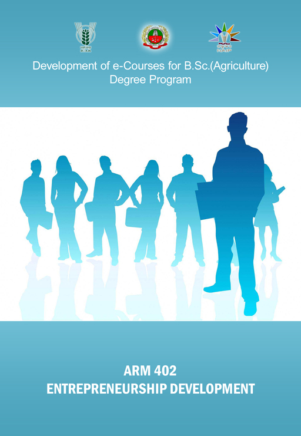

ENTREPRENEURSHIP DEVELOPMENT
:: (
ARM402
) :: Credits 3 (2+1)

Select the lecture topic...
Lec 01 -
Entrepreneur
Lec 02 -
Entrepreneurship
Lec 03 -
Classification of Entrepreneurs
Lec 04 -
Entrepreneur Vs Profess ...
Lec 05 -
Entrepreneurial Process and ...
Lec 06 -
Entrepreneurial - Business ...
Lec 07 -
Sources of Innovative Oppor ...
Lec 08 -
Marketing Research
Lec 09 -
Business Environment – Mi ...
Lec 10 -
Business Environment – Ma ...
Lec 11 -
Entrepreneurial Environment
Lec 12 -
Venture Feasibility – Techni ...
Lec 13 -
Venture Feasibility
Lec 14 -
Venture Feasibility
Lec 15 -
Starting New Business or ...
Lec 16 -
Business Strategy - Concept ...
see more...
Lec 17 -
Business Organization
Lec 18 -
Sources of Finance and ...
Lec 19 -
Venture Capital Financing ...
Lec 20 & 21 -
Role of Financial ...
Lec 22 -
Role of Consultancy Orga ...
Lec 23 -
Capital Markets
Lec 24 -
Accounting System and ...
Lec 25 -
Accounting - Concepts & Con ...
Lec 26 -
Problems in Accounting Sys ...
Lec 27 -
National Agricultural Policy
Lec 28 -
Government Policies and ...
Lec 29 -
Principles of Taxation and ...
Lec 30 -
Setting Up a Small Industry ...